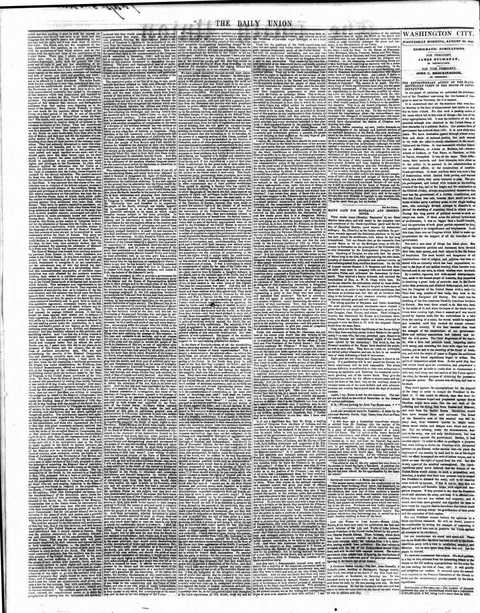

A letter by the schooner Marietta Smith, CapL Chase, from Port
https://www.loc.gov/resource/sn82003410/1856-08-20/ed-1/?sp=2

See the original pageVer la página original
Based on a letter from the schooner Marietta Smith arriving from Port-au-Platt, The Daily Union reported on August 20, 1856, that a revolution had broken out in the capital of the Dominican Republic following a treaty with Old Spain. The treaty's 11th article allowed Spanish descendants to become Spanish citizens, leading thousands of citizens and soldiers to register with Spanish consuls, which caused the suspension of business, the closure of tribunals, and the intended resignation of the President and his cabinet. Additionally, a city newspaper editor shot a Spaniard in broad daylight over a political dispute and escaped, prompting the Spanish consul to offer a $5,000 reward for his capture.
Con base en una epístola conducida por la goleta Marietta Smith desde Puerto Plata, The Daily Union dio a conocer el 20 de agosto de 1856 que una revolución estalló en la capital dominicana a raíz del tratado con España. La cláusula undécima facultaba a los descendientes de españoles a recobrar la nacionalidad de sus mayores, empujando a millares de ciudadanos y tropa a inscribirse ante los cónsules hispanos, lo que ocasionó el cese de transacciones, la clausura de audiencias judiciales y la dimisión del presidente y su ministerio. Un redactor periodístico hirió de muerte a tiros a un peninsular a plena luz del día por motivos de facción dándose a la fuga, ofreciendo el cónsul español 5.000 duros de recompensa por su captura.
Where this standsEn qué punto está
The full text of this article is still being prepared. Until it is ready, this page carries a summary, the passage found on the page, and the link to the original, which is always one click away.El texto completo de este artículo aún se está preparando. Hasta que esté listo, esta página lleva un resumen, el pasaje encontrado en la página y el enlace al original, que siempre está a un clic.
The passage this summary was written fromEl pasaje del que se escribió este resumen
The passage where this article was found, copied from the newspaper page itself, reading errors and all. This is exactly what the summary above is based on.El pasaje donde se encontró este artículo, copiado de la propia página del periódico, con sus errores de lectura y todo. Esto es exactamente aquello en lo que se basa el resumen de arriba.
ple are not blind to the evils of fanaticism or the designs
of corrupt politicians.
N. B.?We are looking for John Van Buren soon.
Lats asp uroBTAST ram Sr. Domingo.? A letter by the
schooner Marietta Smith, CapL Chase, from Port au Piatt,
3d instant, says:
A few days ago a Dominican man-of-war schoon
er arrived from St. Domingo city, the capital of the
Dominican republic, nnd her officers reported the city
in a state of revolution, in consequence of a treaty
with Old Spain. The iih article ot the treaty favorsall
Spanish descendants, and allows them to become Span
ish citizens; and they being the most numerous wish
to become so in tact, and hoist the Spanish flag again.
Citizens, soldiers, and all, are rushing to the Spanish con
suls to get registered, and become such. The dsy the
schooner left the dty 5,099 or mors had registered their
names, and many more would sign. This bad cansed a
great movement in the city. All the tribunals had been
closed, business was suspended, and the President and his
cabinet wished to resign.
The editor of on of the city papers had shot down in
the street, in broad da?light, a Spaniard. A political dis
pute was Die cause, f he editor escaped, hot a reward of
(5,000 has besn offered for his apprehension by the Span
ish consul."
Impost ait disoovsbt.?A Boston p)?r says:
The master mason employed In the construction of the
Merchants' Bank building, State street, has discovered, on
taking down the massive granite pillars which adorned the
old structure, tbst each one of them contaios a smaller
How to cite this articleCómo citar este artículo
The Daily Union. (1856). Washington [D.C.], August 20, 185620 de agosto de 1856. DR in the American PressRD en la Prensa Norteamericana. Library of Congress, Chronicling America: https://www.loc.gov/resource/sn82003410/1856-08-20/ed-1/?sp=2
ReferencesReferencias
Library of Congress, Chronicling America: The Daily Union, August 20, 185620 de agosto de 1856.
Send an observationEnviar una observación
Does this article connect with your family, your town, or something you know? Did we get something wrong? Write to us. Observations go to the editor's inbox and are read by a person.¿Este artículo conecta con su familia, su pueblo o algo que usted conoce? ¿Nos equivocamos en algo? Escríbanos. Las observaciones llegan al buzón del editor y las lee una persona.
Send observationEnviar observación